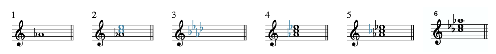
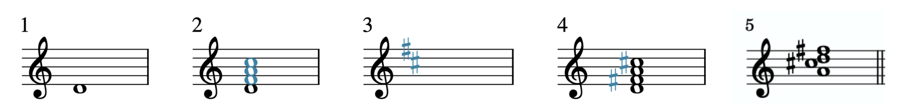

Open Music Theory：繁體中文版
轉位
查看英文原文
Key Takeaways
- The bass voice of triadic harmonies, often simply called the "bass," determines inversion.
- Inverted harmonies do not have the root in the bass. When the third is in the bass, we say the chord is in first inversion, when the fifth is in the bass we say the chord is in second inversion, and when the seventh is in the bass we say the chord is in third inversion.
- In this chapter, only chord symbols will be used.
- Triads and seventh chords are identified according to their root, quality, and inversion.
譜例 1。A 大三和弦的原位、第一轉位與第二轉位。
A 大三和弦包含根音 A、三音 C♯ 與五音 E。依三度疊置成「雪人形狀」時，是原位，低音就是根音。根音不在低音的和弦，稱為轉位和弦。如譜例 1所示，三音在低音時是第一轉位，五音在低音時是第二轉位。和弦符號後方的斜線與音名，表示目前的低音。
務必注意：和弦的低音與根音不是同一回事。A 大三和弦的根音永遠是 A，不論它是原位、第一轉位或第二轉位。但在這幾種位置中，低音依序是 A、C♯、E，如譜例 1所示。
譜例 2整理了這些資訊：
| 位置／轉位 | 根音 | 低音 |
|---|---|---|
| 原位 | 根音 | 根音 |
| 第一轉位 | 根音 | 三音 |
| 第二轉位 | 根音 | 五音 |
譜例 2。三和弦的轉位、根音與低音整理。
查看英文原文
Triadic Inversion
Musicians often prioritize the note that is in the bass voice of triadic harmonies, simply called the "bass," which is the lowest part (or voice) of a composition, regardless of what instrument or voice type is singing or playing that lowest note. Example 1 shows an A major triad with three different notes in the bass and chord symbols (above the staff):
Example 1. An A major triad in root position, first inversion, and second inversion.
An A major triad consists of three notes, the root (A), the third (C♯), and the fifth (E). When a triad is stacked in thirds (i.e. "snowperson form"), we say the triad is in root position. The bass note in root position is the root. Chords that do not have the root in the bass are said to be inverted. As you can see in Example 1, when the third is in the bass the chord is in first inversion and when the fifth is in the bass we say the chord is in second inversion. Chord symbols followed by a slash and a letter name indicate the pitch which is in the bass.
It is important to note that the bass voice of the chord is NOT the same thing as the chord's root. The root of an A major triad is always A, regardless of whether the triad is in root position, first inversion, or second inversion. However, the bass voice changes between these inversions, from A to C♯ to E, as seen in Example 1.
This information is summarized in Example 2:
| Inversion | Root | Bass |
|---|---|---|
| Root Position | Root | Root |
| First Inversion | Root | Third |
| Second Inversion | Root | Fifth |
Example 2. A summary of triadic inversions, root, and bass.
依和弦符號建立轉位三和弦時，要在〈三和弦〉介紹的步驟後，再多加一步。先複習原本的步驟：
- 在五線譜上寫出根音。
- 在根音上方三度與五度寫出音符，也就是畫出雪人形狀。
- 想出或寫出以根音為主音的大調調號。
- 若要寫大三和弦，就將調號中適用於和弦音的變音記號加上去。
- 若要寫小、減或增三和弦，再依需要加上其他變音記號，改變三音或五音。
現在加入第六步：
- 將適當的和弦音移到低音，完成三和弦。
接著依這些步驟，寫出第一轉位的 A♭ 小三和弦（原文符號為 A♭mi/C），如譜例 3所示：

- 先寫 A♭，因為它是三和弦根音。
- 畫出雪人形狀，加入 C、E，分別位於 A♭ 上方三度與五度。
- 回想 A♭ 大調的調號：B♭、E♭、A♭、D♭ 四個降記號。
- 將 E 改為 E♭，因為它在 A♭ 大調調號中。和弦沒有 B、D，因此不需要 B♭、D♭。此時已寫出 A♭ 大三和弦：A♭、C、E♭。
- 小三和弦的三度是小三度，比大三度少半音。因此將三音 C 降半音至 C♭，得到 A♭ 小三和弦：A♭、C♭、E♭。
- 由於和弦是第一轉位，將 C♭ 移到低音；原文在此仍將符號寫為 A♭mi/C。
這些步驟對初學者而言可靠，但需要花些時間。若能在樂器上練熟各種性質的三和弦，以及下文的七和弦，就能逐漸直接掌握，不必每次都按步驟推算。
查看英文原文
Spelling Triads in Inversion
To build an inverted triad from a chord symbol, you need to add one more step to those shown in the Triads chapter. As a reminder, these steps were:
- Draw the root on the staff.
- Draw notes a third and fifth above the root (i.e., draw a snowperson).
- Think of (or write down) the major key signature of the triad’s root.
- To spell a major triad, write any accidentals from the key signature that apply to the notes of the triad.
- For a minor, diminished, or augmented triad, add additional accidentals to alter the chord’s third and/or fifth when appropriate.
Now we will add a sixth step:
- Move the appropriate note to the bass to complete the triad.
Let’s complete this process for an A♭ minor triad in first inversion (A♭mi/C), as seen in Example 3:
- The note A♭ is written because it is the root of the triad.
- A snowperson is drawn; in other words, the notes C and E are added because they are a generic third and fifth, respectively, above A♭.
- The key signature of A♭ major is recalled. A♭ major has four flats: B♭, E♭, A♭, and D♭.
- E♭ is added, because it is in the key signature of A♭ major. B♭ and D♭ are not needed, because those notes aren’t in an A♭ triad. Now we have successfully spelled an A♭ major triad (A♭, C, and E♭).
- Minor triads contain a minor third, which is one half step smaller than a major third. Therefore, our final step is to lower the chord’s third (the C) by a half step (to a C♭). Now we have an A♭ minor triad (A♭, C♭, and E♭).
- C♭ is moved to the bass because the triad is in first inversion (A♭mi/C).
Again, following these steps is a reliable way for beginners to spell inverted triads, but it’s a time-consuming process. If you practice playing all of the qualities of triads (and seventh chords below) on an instrument until you are fluent in them, your knowledge will become more automatic without using this process.
- 找出並寫下根音。
- 判斷並寫下性質。
- 判斷轉位。
- 寫出適當的斜線與低音音名。
譜例 4將同一三和弦分別寫成轉位（第一小節）與原位（第二小節）：
譜例 4。三和弦的轉位（第一小節）與原位（第二小節）。
辨識第一小節三和弦的四個步驟如下：
- 第二小節已將和弦整理成原位，因此可看出根音是 D。
- 這是小三和弦。
- 原來的三音位於低音，因此是第一轉位。
- 和弦符號寫成 Dmi/F。
譜例 5顯示另一個三和弦的轉位（第一小節）與原位（第二小節）：
譜例 5。三和弦的轉位（第一小節）與原位（第二小節）。
辨識第一小節三和弦的四個步驟如下：
- 第二小節已將和弦整理成原位，因此可看出根音是 A。
- 這是大三和弦。
- 原來的五音位於低音，因此是第二轉位。
- 和弦符號寫成 A/E。
查看英文原文
Identifying Triads in Inversion
Triads are identified according to their root, quality, and inversion. With the addition of inversion, you can identify triads in four steps:
- Identify and write its root.
- Identify and write its quality.
- Identify its inversion.
- Write the appropriate slash and letter name.
Example 4 shows a triad in inversion (measure 1) and root position (measure 2):
Example 4. A triad in inversion (measure 1) and root position (measure 2).
The four-step process of identification for the triad in measure 1 is as follows:
- In measure 2, the chord has been put into root position. Now we can see the root of the triad is D.
- This triad is minor.
- The third of the original triad is in the bass; therefore this triad is in first inversion.
- Using chord symbols, we would identify this triad as Dmi/F.
Example 5 shows another triad in inversion (measure 1) and root position (measure 2):
Example 5. A triad in inversion (measure 1) and root position (measure 2).
The four-step process of identification for the triad in measure 1 is as follows:
- In measure 2, the chord has been put into root position. Now we can see the root is A.
- This triad is major.
- The fifth of the original triad is in the bass; therefore this triad is in second inversion.
- Using chord symbols, we would identify this triad as A/E.
Note that the second measure of example 4 and example 5 are in parentheses. It is recommended that you imagine the chord in root position rather than write it out in order to save time.
譜例 6。七和弦的各種轉位。
譜例 7整理了這些資訊：
| 位置／轉位 | 根音 | 低音 |
|---|---|---|
| 原位 | 根音 | 根音 |
| 第一轉位 | 根音 | 三音 |
| 第二轉位 | 根音 | 五音 |
| 第三轉位 | 根音 | 七音 |
譜例 7。七和弦的轉位、根音與低音整理。
查看英文原文
Seventh Chord Inversion
Like triads, seventh chords can also be inverted; in other words, their root doesn't necessarily have to be the bass. Example 6 shows an A7 chord in root position, first inversion, second inversion, and third inversion:
Example 6. Seventh chord inversions.
As you can see in Example 6, seventh chords have one more note than triads, so they have one additional inversion. When the chordal seventh of a seventh chord is in the bass, the chord is in third inversion. Don't forget that the bass and the root of the chord are NOT synonymous. In Example 6 the root of the chord is always A, regardless of its inversion and bass note.
A summary of this information can be seen in Example 7:
| Inversion | Root | Bass |
|---|---|---|
| Root Position | Root | Root |
| First Inversion | Root | Third |
| Second Inversion | Root | Fifth |
| Third Inversion | Root | Seventh |
Example 7. A summary of seventh chord inversion, root, and bass.
依和弦符號建立轉位七和弦時，要在〈七和弦〉介紹的步驟後，再多加一步。先複習原本的步驟：
- 在五線譜上寫出根音。
- 在根音上方三度、五度與七度寫出音符，也就是畫出「加長的雪人」。
- 想出或寫出以根音為主音的大調調號。
- 將調號中適用於其餘和弦音的變音記號加上去。
現在加入第五步：
- 將適當的和弦音移到低音，完成七和弦。
接著依這些步驟，寫出第二轉位的 D 大大七和弦（Dmaj7/A），如譜例 8所示：

- 在五線譜上寫出根音 D。
- 畫出加長的雪人，加入 F、A、C，分別位於 D 上方三度、五度與七度。
- 回想 D 大調的調號：F♯、C♯ 兩個升記號。
- 在 F、C 左側加上升記號（♯），因為 D 大調使用 F♯ 與 C♯。
- 由於和弦是第二轉位，將五音 A 放到低音。
查看英文原文
Spelling Seventh Chords in Inversion
To build an inverted seventh chord from a chord symbol, you need to add one more step to those shown in the Seventh Chords chapter. As a reminder, these steps were:
- Draw the root on the staff.
- Draw notes a third, fifth, and seventh above the root (i.e., draw an “extra-long” snowperson).
- Think of (or write down) the major key signature of the triad’s root.
- Write any accidentals from the key signature that apply to the remaining notes in the chord.
Now we will add a fifth step:
- Move the appropriate note to the bass to complete the seventh chord.
Let’s complete this process for a D major major seventh chord in second inversion (Dmaj7/A), as seen in Example 8:
- The note D, the chord’s root, is drawn on the staff.
- An extra-long snowperson is drawn—an F, A, and C, the notes a generic third, fifth, and seventh above the D.
- The key signature of D major has been recalled. D major has two sharps, F♯ and C♯.
- Sharps (♯) have been added to the left of the F and the C, because F♯ and C♯ are in the key signature of D major.
- A is moved to the bass because the seventh chord is in second inversion.
- 找出並寫下根音。
- 判斷並寫下三和弦部分的性質。
- 判斷並寫下七度音程的性質。
- 判斷轉位。
- 寫出適當的斜線與低音音名。
譜例 9顯示一個轉位七和弦，並示範辨識過程：
譜例 9。七和弦的轉位（第一小節）與原位（第二小節）。
辨識第一小節七和弦的五個步驟如下：
- 第二小節已將七和弦整理成原位，因此可看出根音是 E。
- 三和弦部分是小三和弦。
- 和弦七音與根音之間也是小七度。
- 原譜例的三音在低音，因此是第一轉位。
- 和弦符號為 Emi7/G。
譜例 10顯示另一個轉位七和弦，並示範辨識過程：
譜例 10。七和弦的轉位（第一小節）與原位（第二小節）。
辨識第一小節七和弦的五個步驟如下：
- 第二小節已將七和弦整理成原位，因此可看出根音是 G。
- 三和弦部分是大三和弦。
- 和弦七音與根音之間是小七度。
- 原譜例的七音在低音，因此是第三轉位。
- 和弦符號為 G7/F。
同樣地，為節省時間，建議第一步只在心中想像原位和弦，不必真的寫出來。
- Cohn, Richard 等。2001。〈Harmony〉（和聲）。Grove Music Online。https://doi.org/10.1093/gmo/9781561592630.article.50818。
- Drabkin, William。2001。〈Inversion〉（轉位）。Grove Music Online。https://doi.org/10.1093/gmo/9781561592630.article.13879。
- McGrain, Mark。1986。Music Notation（音樂記譜法）。波士頓：Berklee Press。
- Roemer, Clinton。1985。The Art of Music Copying: The Preparation of Music for Performance（抄譜的藝術：為演出準備樂譜），第 2 版。Sherman Oaks：Roerick Music Company。
媒體出處與授權
- 〈A♭ 小三和弦轉位〉© Megan Lavengood，採用 CC BY-SA（姓名標示—相同方式分享）授權。
- 〈D 大大七和弦轉位〉© Megan Lavengood，採用 CC BY-SA（姓名標示—相同方式分享）授權。
查看英文原文
Identifying Seventh Chords in Inversion
Like triads, seventh chords are also identified according to their root, quality, and inversion. You can identify seventh chords in five steps:
- Identify and write its root.
- Identify and write its quality of triad.
- Identify and write its quality of seventh.
- Identify its inversion.
- Write the appropriate slash and letter name.
Example 9 shows a seventh chord in inversion and the process of identification:
Example 9. A seventh chord in inversion (measure 1) and root position (measure 2).
The five-step process of identification for the seventh chord in measure 1 is as follows:
- In measure 2, the seventh chord has been put into root position. Now we can see the root of the chord is E.
- This triad is minor.
- The chordal seventh is also minor.
- The original example is in first inversion, because the third is in the bass.
- This chord is an Emi7/G chord.
Another seventh chord in inversion is shown in Example 10, along with the process of identification:
Example 10. A seventh chord in inversion (measure 1) and root position (measure 2).
The five-step process of identification for the seventh chord in measure 1 is as follows:
- In measure 2, the seventh chord has been put into root position. Now we can see the root of the chord is G.
- The triad is major.
- The chordal seventh is minor.
- The original example is in third inversion, because the seventh is in the bass.
- This chord is a G7/F chord.
Again, it is recommended that you imagine the chord in root position rather than write it out in order to save time (step number 1).
It is important to note that triad and seventh chord identification is not affected by the doubling or open spacing of notes, as we've seen in previous chapters.
- Cohn, Richard, et al. 2001. “Harmony.” Grove Music Online. https://doi.org/10.1093/gmo/9781561592630.article.50818.
- Drabkin, William. 2001. "Inversion." Grove Music Online. https://doi.org/10.1093/gmo/9781561592630.article.13879.
- McGrain, Mark. 1986. Music Notation. Boston: Berklee Press.
- Roemer, Clinton. 1985. The Art of Music Copying: The Preparation of Music for Performance, 2nd edition. Sherman Oaks: Roerick Music Company.
- Understanding Inversions of Triads and Seventh Chords (Justin Rubin)
- Triad Inversion (musictheory.net)
- Seventh Chord Inversion (musictheory.net)
- How Do Chord Inversions Work? (Hello Music Theory)
- Chord Inversions (key-notes.com)
- Triad Chord Inversion (teoria)
- What are Chord Inversions? (YouTube)
- What are Chord Inversions? Piano (YouTube)
- Seventh Chord Ear Training (teoria)
- Chord Ear Training (musictheory.net)
- Chord Ear Training (Tone Savvy)
- Triad Construction (Includes Inversion), pp. 3–4 (.pdf)
- Triad Construction and Identification (Includes Inversion), (.pdf), pp. 4–6 (.pdf)
- Triad Chord Identification (Includes Inversion) (.pdf)
- Seventh Chord Construction (Includes Inversion), pp. 7–8, 11 (.pdf), p. 4 (.pdf)
- Triad Inversion A (.pdf, .mscz). Asks students to identify root, quality, and inversion of 10 closed-position triads, and to write 10 inverted triads from chord symbols. Includes C clefs.
- Triad Inversion B (.pdf, .mscz). Asks students to identify root, quality, and inversion of 10 closed-position triads, and to write 10 inverted triads from chord symbols. Treble and bass clefs only.
- Seventh Chord Inversion A (.pdf, .mscz). Asks students to identify root, quality, and inversion of 10 closed-position seventh chords, and to write 10 inverted seventh chords from chord symbols. Includes C clefs.
- Seventh Chord Inversion B (.pdf, .mscz). Asks students to identify root, quality, and inversion of 10 closed-position seventh chords, and to write 10 inverted seventh chords from chord symbols. Treble and bass clefs only.
Media Attributions
- Ab Minor Triad in Inversion © Megan Lavengood is licensed under a CC BY-SA (Attribution ShareAlike) license
- D Major Major Seventh Chord in Inversion © Megan Lavengood is licensed under a CC BY-SA (Attribution ShareAlike) license